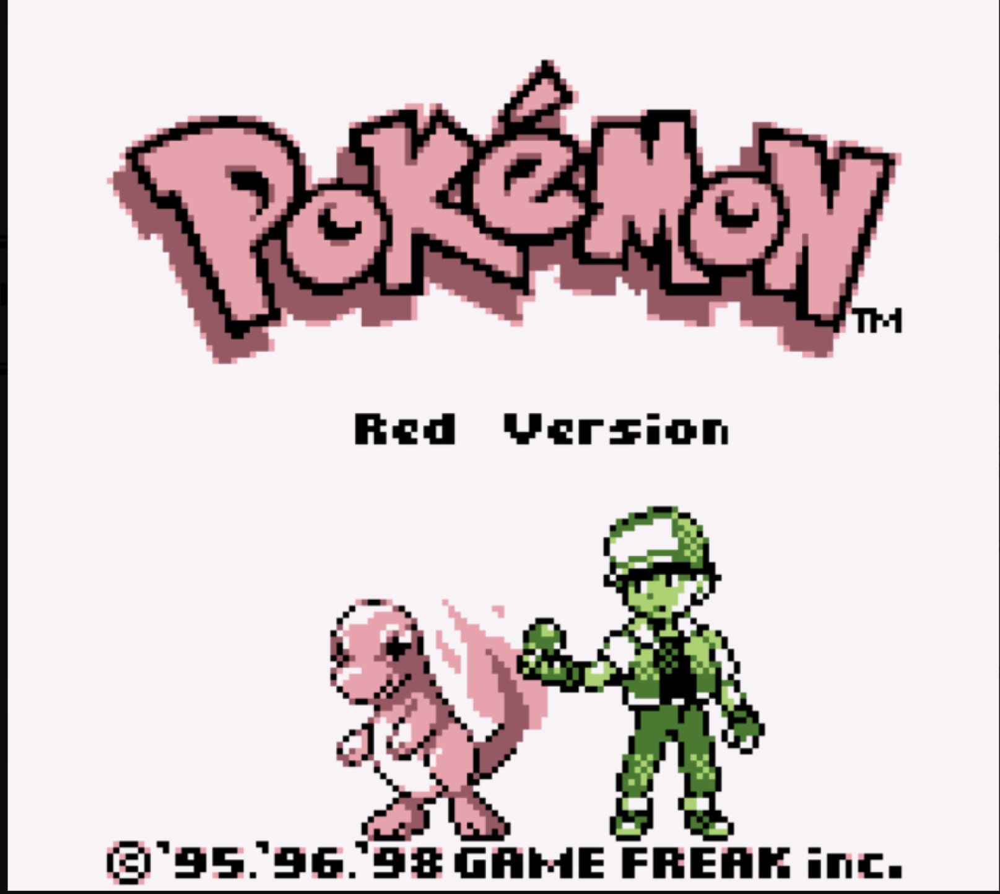

Graphics and Visual Style
Pokémon Red's graphics are iconic for the 8-bit Game Boy era, with pixel art that has aged nostalgically well. The color palette and simple sprites contribute to its charm.
Learn more about the Game Boy hardware here.
Pokémon Red's graphics are iconic for the 8-bit Game Boy era, with pixel art that has aged nostalgically well. The color palette and simple sprites contribute to its charm.
Learn more about the Game Boy hardware here.